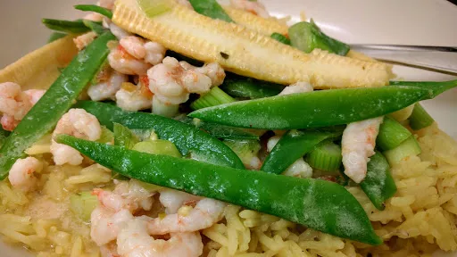

Thai prawn curry

Servings: 4
Total: 20 mins
Ingredients
- 2 mugs rice
- pilau rice seasoning
- 2x 180 g pack cooked prawns
- 1 tbsp oil
- 2 tbsp Thai red curry paste
- 400 g tin coconut milk
- 200 g pack of mangetout and baby sweetcorn, both cut in half length ways
- 6 spring onions
Instructions
- Make the pilau
rice2 mugs
(1:2 ratio of rice2 mugs
:water).
- Place the
prawns2x 180 g pack
of some kitchen towel to absorb any extra moisture from them.
- Heat the
oil1 tbsp
in a frying pan. Add the curry paste2 tbsp
and cook for 30 seconds stirring frequently. Add the coconut milk400 g tin
and baby sweetcorn. Cook on a high heat for 3-4 minutes, the sauce should thicken slightly.
- Add the
prawns2x 180 g pack
, spring onions6
and the mange tout and cook for 1-2 minutes.
- When the
rice2 mugs
is cooked, serve the curry on top of the rice2 mugs
.
Nosh for graduates
Short Link
Long Link